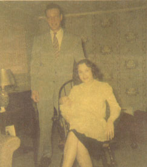

Stephen Robert Spicer
19?? - 19??
Stephen Robert Spicer was the firstborn son of Bob and Bea Spicer. He died when he was only 6 weeks old.

Baby Stephen photographed with his parents.
Parents:
Catherine Beatrice Spicer
1929 - ?
Robert James Spicer
Offspring:
NONE
References:
1. Virginia Craig
Last Modified: 12 May 2004 by
Brad Wogsland
.